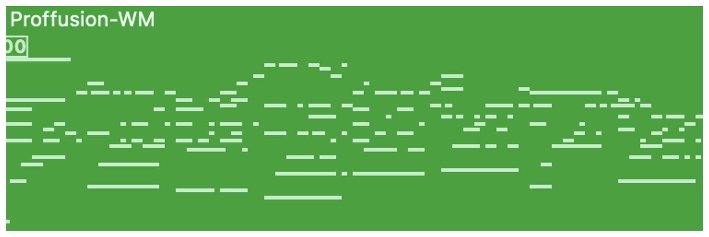

Overview
This is the initial demo page of our work: Mamba-Diffusion Model with Learnable Wavelet for Controllable Symbolic Music Generation. More detailed demonstrations will be provided later.
We represent symbolic music as image-like pianorolls, facilitating the use of diffusion models for the generation of symbolic music. Moreover, this study introduces a novel pianoroll diffusion model Proffusion-WM that incorporates our proposed Transformer-Mamba block and learnable wavelet transform. We compared our diffusion model with Polyffusion which is also a diffusion model-based method for pianoroll generation. Furthermore, the learnable wavelet transform’s effectiveness is evaluated by removing the wavelet transform block in the proposed model. This model without wavelet transform is denoted as Proffusion-M. We also implemented a Proffusion-W model without Mamba for comparison. All the four music generative models were trained on the POP909 dataset. The symbolic music samples generated by the trained models are presented below.Polyffusion

Proffusion-W
Proffusion-M
Proffusion-WM
